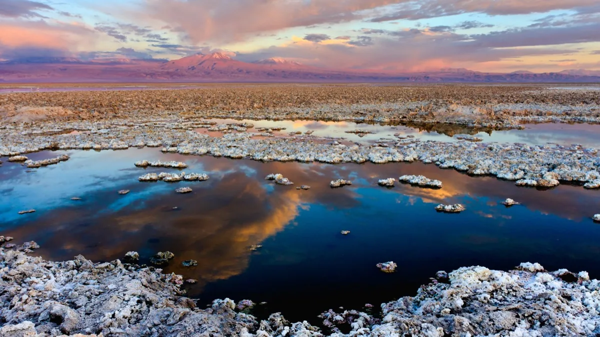

Comprendiendo los límites de la vida en un mundo cambiante.
La RedInvestigamos ambientes poliextremos en cinco nodos a lo largo de Chile, desde el desierto de Atacama hasta la Antártica.

SALAR DE ATACAMAFIG. 01
01 · Misión
Estudiamos los mecanismos de adaptación en ambientes poliextremos — del nivel molecular al paisaje — y su relación con las dinámicas de carbono en el Antropoceno.